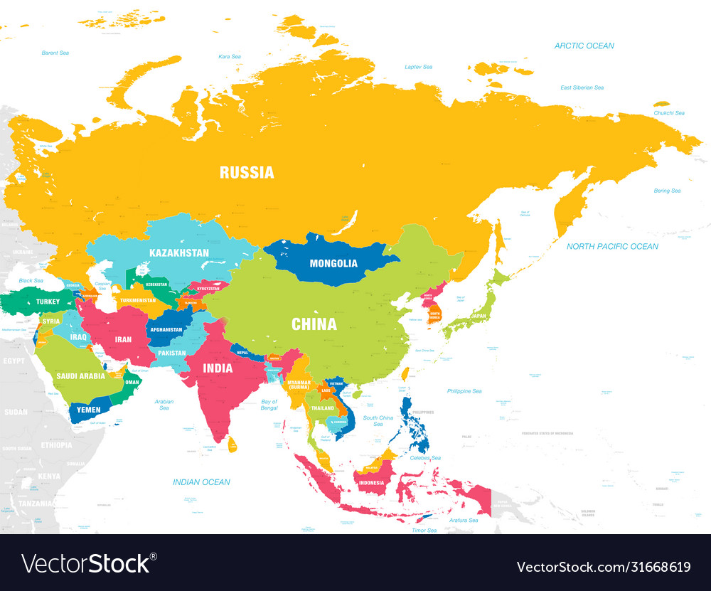

Asia is the largest and most populous continent on Earth. It is home to a rich diversity of cultures, languages, religions, and historical landmarks. From the Himalayan mountains to the tropical beaches of Southeast Asia, this continent offers a vast range of geography and history.
